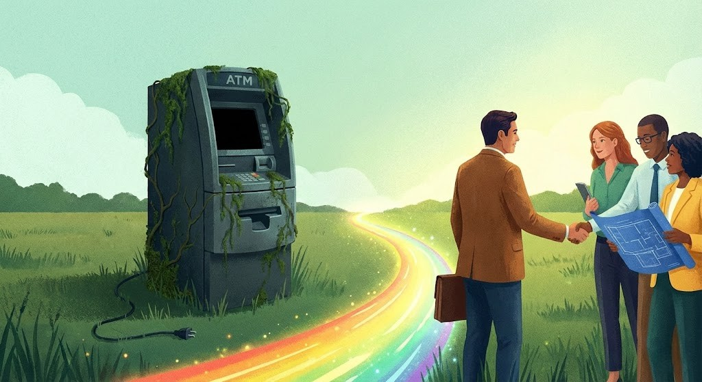

A $592 Billion Paradox
Charitable giving hit $592.50 billion in 2024—a record. You'd think that's good news. It is, mostly. But here's what keeps me up at night: that money came from fewer people than the year before. Donor participation dropped 4.5% while total dollars went up 6.3%.
What does that mean? Bigger checks from a shrinking pool. That's a concentration risk, and if you've spent any time in finance, you know concentration risk eventually catches up with you.
I work with foundations and endowments every day, and I see this playing out in real time. The organizations that thrive aren't necessarily the ones with the flashiest galas or the biggest marketing budgets. They're the ones that do something deceptively simple: they tell their donors what happened with the money.
Let's Talk Numbers
There's a statistic that gets thrown around in fundraising circles: 88% of dollars raised come from 12% of donors. I've seen various versions of this over the years, and the Fundraising Effectiveness Project data backs it up. It's real.
Think about what that means for your organization. Lose a few key relationships, and you're not just down a donation—you're potentially facing a budget crisis.
Here's where it gets worse. The average nonprofit retains only 40-45% of its donors year over year. For first-time donors, it's closer to 20%. That means if you bring in 100 new donors this year, roughly 80 of them won't give again.
I don't care how good your acquisition strategy is—you can't outrun those numbers forever.
Retention Rate Comparison
| First-time donors | ~20% |
| Average all donors | 40-45% |
| Multi-year repeat donors | 60%+ |
| Monthly recurring donors | 80-90% |
But here's what's interesting. Monthly recurring donors? They stick around at rates of 80-90%. Repeat donors who've given multiple years in a row? North of 60%. The gap between those numbers and the 20% first-time retention rate tells you everything you need to know about where to focus.
What Actually Works
I'm going to tell you something that sounds obvious but apparently isn't, based on how few organizations do it well: donors want to know what you did with their money.
That's it. That's the secret.
There's research from McConkey International showing that donors who get a personal thank-you within 48 hours are four times more likely to give again. Penelope Burk's work found that a thank-you call from a board member within 24 hours increases the next gift by 39%. These aren't small effects.
But the thank-you is just the beginning. What really moves the needle is ongoing communication about impact. Not "we need more money" communication—"here's what your money did" communication.
I've sat in meetings with foundation boards where the development director couldn't answer basic questions about program outcomes. That's a problem. Your major donors are sophisticated people. Many of them run businesses or manage investments. They understand ROI. If you can't articulate your ROI in mission terms, you're leaving money on the table.
What Good Reporting Actually Looks Like
I'm not talking about glossy annual reports that cost $50,000 to produce and nobody reads. I'm talking about consistent, honest communication that answers three questions:
The Three Essential Questions
- What did you set out to do?
- What actually happened?
- What did you learn?
Notice I said "what actually happened," not "what went well." Donors aren't stupid. They know not everything works. An organization that only reports successes looks like an organization that's either lying or not trying anything ambitious. Neither is a good look.
The best impact reports I've seen combine hard numbers with real stories. Something like: "Last year, 847 students completed our after-school program. 94% improved their reading scores by at least one grade level. Here's a note from Maria, who's now reading Harry Potter to her little brother."
Numbers give credibility. Stories give meaning. You need both.
The Investment Angle
Here's where I'll put on my investment advisor hat for a minute.
If you're a foundation or endowment, your donors made a bet on your long-term viability. They gave you money expecting it to be there—and working—for years or decades. That means you owe them two kinds of reporting: program impact AND financial stewardship.
I'm consistently surprised by how many organizations separate these conversations. The development team talks about programs. The finance committee talks about investments. The donor gets a fragmented picture at best.
Your investment advisor should be part of your stewardship strategy. Not in a sales-y way—in a "here's how we're managing your trust" way. When a donor asks how the endowment is doing, someone should be able to give a clear, honest answer that connects portfolio performance to mission capacity.
Foundation assets in the U.S. have grown from around $533 billion in 2009 to over $1.6 trillion today. That's real money. It deserves real accountability.
Build the Pipeline
One more thing worth mentioning: monthly giving programs are quietly becoming the backbone of sustainable fundraising. Monthly donors now account for about 31% of online revenue, and that number keeps climbing.
Why does this matter for major gifts? Because your monthly donors are your farm team. They've already demonstrated commitment. They're giving regularly. They're engaged. Research shows they're six times more likely to include you in their estate plans than one-time donors.
The path from $25/month donor to $25,000 major gift donor isn't automatic, but it's a lot shorter than the path from stranger to major donor. And the bridge between those two points? Consistent impact communication that deepens the relationship over time.
What to Do Monday Morning
I'll wrap up with some practical suggestions. These aren't revolutionary, but they work:
📋 Action Items for Your Team
- Get your thank-you time under 48 hours. Automate the initial acknowledgment if you have to, but make it good. Then follow up with something personal within a week for any gift over your threshold.
- Pick 3-5 metrics that actually matter. Not 47 things you could measure—the handful that genuinely indicate whether you're succeeding. Track them consistently. Report them honestly.
- Create a stewardship calendar. Map out when each major donor hears from you and about what. If the only time they hear from you is when you're asking for money, that's a problem.
- Get your development and finance teams talking. Seriously. If your CFO and your development director aren't coordinating on donor communication, you're probably sending mixed messages or missing opportunities.
- Ask your investment advisor for help. If they can't explain your endowment's performance in plain English suitable for a donor letter, find one who can.
The Bottom Line
Donor retention isn't a mystery. People keep giving to organizations that respect their investment, communicate honestly, and demonstrate results. The 88/12 rule means you can't afford to lose your key relationships. And you won't—if you treat them like the partners they are.
The organizations that figure this out will thrive. The ones that keep treating donors like ATMs will keep wondering why the ATMs stop working.
About Together Forward Capital
Together Forward Capital works exclusively with foundations, endowments, and nonprofit organizations. We provide investment advisory services with a fiduciary standard, and we actually understand the unique reporting and stewardship needs of philanthropic clients. If you're looking for an advisor who gets both sides of the equation—portfolio performance and mission impact—let's talk.
Schedule a Complimentary Portfolio ReviewDisclosures: This article is for informational purposes only and is not investment, legal, or tax advice. Together Forward Capital is an SEC-registered investment adviser operating as a DBA of R.F. Lafferty & Co., Inc. Registration does not imply a certain level of skill or training.